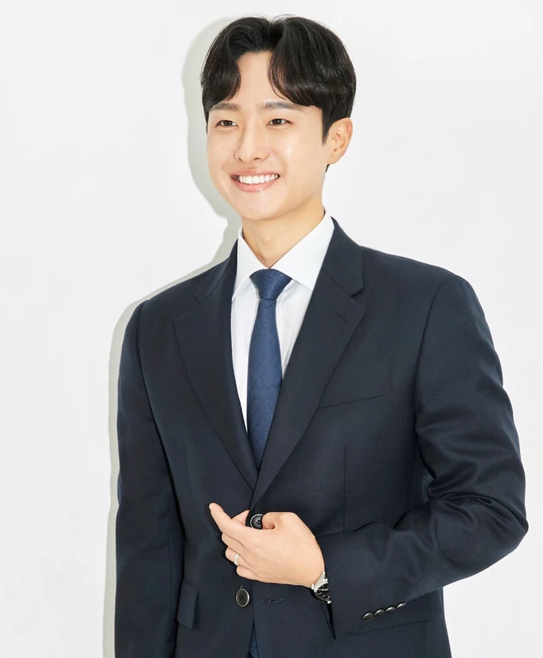

Ideas are powered
by people.
Meet the directly supervised CMLab team, research interns, and the researchers we collaborate with.

Jihyong Oh / 오지형
Assistant Professor at the Graduate School of Advanced Imaging Science, Chung-Ang University, and Chief AI Officer at inshorts. Research in low-level vision, multimedia AI, and 3D/4D visual intelligence.
Experiences
[SEP 2023 - Present] Assistant Professor, GSAIM @ Chung-Ang University (CAU), Seoul, South Korea
Lab: CMLab (Creative Vision and Multimedia Lab)
[NOV 2024 - ] Chief AI Officer (CAIO) @ Inshorts.ai, Seoul, South Korea
Role: Concurrent appointment, Development of Low-level Vision AI models and provision of research guidance, as well as the conception and exploration of new research topics.
[APR 2023 - AUG 2023] Post-doctoral Researcher @ VICLAB (Video & Image Computing Lab), Daejeon, South Korea
Topic: Dynamic NeRF & Low-level Vision
[MAY 2022 - SEP 2022] AI Research Scientist Intern @ Meta (Reality Labs), Sunnyvale, CA, USA
Topic: Video View Synthesis using Large-Motion Dynamic NeRF
[JAN 2016 - FEB 2016] Undergraduate Intern @ Electronic Telecommunication Research Institute (ETRI), Daejeon, South Korea
Topic: Electroencephalography (EEG) Signal Processing
[Sep 2014 - FEB 2015] Exchange Student @ Technische Universität Berlin (TUB), Berlin, Germany
Educational History
[03.2019 - 02.2023] Ph.D., KAIST - School of Electrical Engineering
Advisor: prof. Munchurl Kim, G.P.A: 4.2 (121 credits completed)
[03.2017 - 02.2019] M.S., KAIST - School of Electrical Engineering
Advisor: prof. Munchurl Kim, G.P.A: 4.17 (53 credits completed)
[02.2012 - 02.2017] B.S., KAIST - School of Electrical Engineering
G.P.A: 3.75(/4.3) (141 credits completed) / 🏅Cum Laude
Minor: Business and Technology Management
[03.2010 - 02.2012] Daejeon Science High School (DSHS)
Early Graduation (2years)
Services
Lead Organizer: MLOW: Many Lenses, One World, ICIP'26 Satellite Workshop
Special Session Organizer: IEEE ICME'26, SS02: Advances in Imaging, Perception, and Reasoning for High-Dimensional Visual Data
Program Chair: IEIE Joint Summer School'26
Program Co-Chair: IEIE AI & Virtual Convergence Workshop’26
Program Committee Member: JKAIA'26, KIBME Workshop'26, Summer Education Program'26, AAAI'25-26
Organizing Committee Member
IEIE: Joint Winter School'26, Summer School'26, Joint Summer School'25
KIBME: Generative Media and Protection Research Group
Paper Review Committee Member
KAIA: Fall Conference'26
Session Chair: MLOW: Many Lenses, One World, ICIP'26 Satellite Workshop, ICEIC'26
Associate Editor: IEIE Transactions on SPC ('24-26)
Journal Reviewer: IEEE TPAMI/TM/TIP/TCSVT/TGRS/Access, ACM TOMM, IJCV
Conference Reviewer: CVPR'21-26, ICCV'21-25, ECCV'22-26, SIGGRAPH'24-26, SIGGRAPH Asia'26, AAAI'21, ICRA'25, NeurIPS'26, ICLR'26
Awards, Honors & Research Gifts
Adobe Research Gift, Adobe Inc., $10,000 unrestricted gift to Chung-Ang University in support of Prof. Jihyong Oh’s research activities, 2024.
Outstanding Reviewer Awards: ICCV'21 (top 5%) CVPR'24 (top2%), ICCV'25 (top3%), CVPR'26 (top6.1%), ECCV'26.
Outstanding Instructor Awards: Chung-Ang University, Python and Artificial Intelligence courses, 2025, Introduction to Generative AI, 2026.
Selected Paper Distinctions: 🏆 Orals: FMA-Net (CVPR'24, 0.78%), XVFI (ICCV'21, 3%), Deep SR-ITM (ICCV'19, 4%);🏅Highlights: MoRel (CVPR'26, 3.6%), EcoSplat (CVPR'26, 3.6%), DiffPS (ICCV'25, 2.35%).
Academic Presentations & Invited Activities
[31]International Workshop Organization (Eng🇺🇸)
Lead Organizer & Session Chair, Many Lenses, One World: Culturally-Aware Interactive AI in Metaverse (MLOW), IEEE ICIP 2026 Satellite Workshop, Tampere, Finland.
Co-Curator, Many Lenses in Creative Practice: MLOW AI + Art International Exhibition, featuring academic, Art–Science, and industry demonstrations during the official ICIP 2026 coffee break, 09.17.2026.
[30]Invited Talk
Title: "Beyond Recognition: Vision-Language Models for Visual Restoration and Creation"
15 mins, [한국인공지능학회] 2026 한국인공지능학회 하계학술대회 (기획세션 2-2: Recent Advances in Vision-Language Models), hosted by Prof. Junyeong Kim, 08.07.2026.
[29]Oral Session
Title: "MoRel: Long-Range Flicker-Free 4D Motion Modeling Anchor Relay-based Bidirectional Blending via with Hierarchical Densification" [CVPR'26, Highlight]
15 mins, KCCV 2026 (Oral 7), hosted by Prof. Junseok Kwon, 08.05.2026.
[28]Invited Program Lecture
Title: "AI 컴퓨터 비전 (Al Computer Vision)" [Next frame: AI x Virtual Convergence Film Production]
3 hours, K-Cinema & K-Content Masterclass, hosted by Prof. 최정인, 07.22.2026.
[27]Academic Outreach Lectures
Title: "AI컴퓨터 비전의 실생활 적용 (AI Computer Vision in Real-World Applications)"
2 hours, 숭의여고, 2026년 상반기 4단계 BK21 학문의 대중화 및 지역사회 기여를 위한 교수진 특강 프로그램, 07.21.2026.
[26]Invited Talk
Title: "Curiosity Over Plans: My Journey from Pixels to 4D Worlds"
15 mins, [한국정보과학회] 2026 한국컴퓨터종합학술대회 (KCC2026) ([SW스타랩] SW스타랩 졸업생 재학생 협력 워크숍), hosted by Prof. Chang D. Yoo, 06.25.2026.
[25]Invited Talk
Title: "Low-Level Vision: Content Enhancement and Restoration"
25 mins, [대한전자공학회] 2026년도 하계종합학술대회 (Young Leaders Symposium (YLS) 세션 - 신호처리 분야), hosted by Prof. Sung In Cho, 06.24.2026.
[24]Invited Talk
Title: "MoRel: Long-Range Flicker-Free 4D Motion Modeling Anchor Relay-based Bidirectional Blending via with Hierarchical Densification" [CVPR'26, Highlight]
20 mins, [한국방송•미디어공학회] 2026년 하계학술대회 (국제 최우수컨퍼런스 논문 PI 초청 발표), hosted by Prof. Sang-hyo Park, 06.20.2026.
[23]Invited Talk
Title: "Generative Visual Al from Pixels to 4D Worlds: A Low-Level Vision Perspective"
30 mins, 2026 KAIST VIC 연구실 워크숍, hosted by Prof. Munchurl Kim, 05.16.2026.
[22]Invited Talk
Title: "Low-Level Vision: Content Enhancement and Restoration"
1 hour, [한국방송•미디어공학회] 2026년 춘계 방송과 미디어 기술 워크숍, hosted by Prof. Suk-Ju Kang, 05.15.2026.
[21]Invited Talk (Eng🇺🇸)
Title: "Low-Level Vision: Content Enhancement and Restoration"
1 hour, Graduate School of Artificial Intelligence, UNIST, hosted by Prof. Jaejun Yoo, 05.13.2026.
[20]Invited Talk
Title: "AI기반 미디어 화질 복원과 개선"
1 hour, Sungkyunkwan University (SKKU), hosted by Prof. Eun-Seok Ryu, 04.10.2026.
[19]Invited Tutorial Lecture
Title: " Low-level 비전의 기초"
1 hour, [한국방송•미디어공학회] 2026년도 동계교육 -인공지능 기반 이론 및 핵심 응용 기술 강좌-, hosted by Prof. Wonjun Kim, 02.23.2026.
[18]Invited Program Lecture
Title: "AI컴퓨터 비전의 실생활 적용 (AI Computer Vision in Real-World Applications)" [Beyond the Screen: Al x Metaverse Film Production]
3 hours, The 2nd Winter 2026 Short-term Intensive Program for Chinese Film & Animation Students & Faculty, hosted by Prof. 최정인, 02.03.2026.
[17]Invited Tutorial Lecture
Title: "Low-Level Vision: Content Enhancement and Restoration"
1 hour, [한국방송•미디어공학회] 2025년 동계학술대회, hosted by Prof. Jongwon Choi, 12.29.2025.
[16]Academic Outreach Lectures
Title: "AI컴퓨터 비전의 실생활 적용 (AI Computer Vision in Real-World Applications)"
2 hours per talk (영등포중, 숭의여고), 2025년 하반기 4단계 BK21 학문의 대중화 및 지역사회 기여를 위한 교수진 특강 프로그램, 12.12&18.2025.
[15]Invited Tutorial Lecture
Title: "모션 및 디테일 향상: NeRF & 3DGS를 활용한 고품질 4D 시공간 재구성 (3D Low-Level Vision)"
1 hour, [대한전자공학회] 2025년 영상이해/영상처리 연구회 합동 여름학교, hosted by Prof. Kyong Hwan Jin, 07.18.2025.
[14]Academic Outreach Lectures
Title: "AI컴퓨터 비전의 실생활 적용 (AI Computer Vision in Real-World Applications)"
2 hours per talk (영등포고, 숭의여고), 2025년 상반기 4단계 BK21 학문의 대중화 및 지역사회 기여를 위한 교수진 특강 프로그램, 07.14~15.2025.
[13]Invited Program Lecture
Title: "AI기반 미디어 화질 복원과 개선 (Al-based Media Quality Restoration and Enhancement)" [Reality to Metaverse + Al]
3 hours, 절강전매대학 X 중앙대학교 단기 교육 프로그램, hosted by Prof. 최정인, 07.11.2025.
[12]Invited Talk
Title: "모션 및 디테일 향상_NeRF & 3DGS를 활용한 고품질 4D 시공간 재구성 (3D Low-Level Vision)"
30 mins, 2025년 KAIST VIC 워크숍, hosted by Prof. Munchurl Kim, 05.24.2025.
[11]Invited Tutorial Lecture
Title: "모션 및 디테일 향상_NeRF & 3DGS를 활용한 고품질 4D 시공간 재구성 (3D Low-Level Vision)"
1 hour, [한국방송•미디어공학회] 2025년 실감미디어 워크숍, hosted by Prof. Eunbyung Park, 04.24.2025.
[10]Invited Tutorial Lecture
Title: "AI-based Media Enhancement and Restoration (Low-Level Vision)"
30 mins, [대한전자공학회] 2025년 영상처리연구회 겨울학교, hosted by Prof. Je-Won Kang, 02.15.2025.
[9]Invited Lecture
Title: "컴퓨터 비전 및 비디오 처리의 실생활 적용"
40 mins, K-MOOC 3단계 무크선도대학 온라인 특강, 11.27.2024.
[8]Invited Talk
Title: "Trends in Artificial Intelligence Vision Research"
1 hour, Sogang University (SU), hosted by Prof. Joon-Kyu Han, 11.22.2024.
[7]Invited Industry Seminar
Title: [HE] 최신 영상 AI기술 Trend: Low level video processing & Computer Vision - "Handling Real-World Videos in Low-Level Vision"
70 mins, LG Electronics, hosted by Yeon Oh Nam, 09.30.2024.
[6]Young Researcher Session Talk
Title: "Handling Real-World Videos in Computer Vision Tasks"
20 mins, [한국방송•미디어공학회] 2024년 하계학술대회, hosted by Prof. Munchurl Kim, 06.27.2024.
[5]Invited Talk (Paper Presentations) (Eng🇺🇸)
30 mins, AIS (CVPR 2024 Workshop), hosted by Marcos V. Conde, 06.17.2024.
[4]Invited Talk (Applied Math Colloquium)
Title: "Handling Real-World Videos in Computer Vision Tasks"
1 hour, Konkuk University (KU), hosted by Prof. Hwijae Son, 05.30.2024.
[3]Young Researcher Session Talk
Title: "Handling Real-World Videos in Computer Vision Tasks"
20 mins, IPIU 2024, hosted by Prof. Hak Gu Kim, 02.01.2024.
[2]Invited Talk
Title: "Handling Real-World Videos in Computer Vision Tasks"
1 hour, Sungkyunkwan University (SKKU), hosted by Prof. Eun-Seok Ryu, 08.05.2023.
[in Graduate School]
[1]Invited Talk
Title: "A Study on SAR: CNN/GAN-based methods for SAR applications"
1 hour, Korea Aerospace Research Institute (KARI), 22.05.2019
Media & Public Engagement
[10]Featured Member Profile (10.30.2026)
[2026] 방송과 미디어 제31권 4호 (월드 모델 기반의 차세대 미디어 생성 기술) [e-journal]
Broadcast & Media, Vol. 31, No. 4, pp. 114–120, KIBME, Oct. 2026.
Link: [뉴스레터] 회원소개 - 오지형 교수(중앙대학교)
[9]Invited Faculty Column (10.12.2026)
Title: "What Should We Teach in the Classroom in the Age of AI?"
Link: 중대신문-강단사색
[8]ECCV 2026 (07.16.2026)
Link: CAU News
[7]LightFest 3.0 (05.13.2026)
Link: 중앙일보,E동아,이뉴스투데이,대학저널,베타뉴스,한국대학신문,스마트경제,비욘드포스트,아시아타임즈,자치안성신문
[6]CVPR 2026 (03.05.2026)
Link: CAU News
[5]AAAI 2026 (12.16.2025)
Link: CAU News
[4]TPAMI 2025 (09.19.2025)
Link: EurekAlert!, CAU News
[3]CVPR 2025 (03.07.2025)
Link: CAU News
[2]CAIO @ Inshorts (01.16.2025)
Links: AI TIMES, 유니콘팩토리, VENTURESQUARE, TECHWORLD, 매일경제, 머니투데이
[1]CVPR 2024 (03.14.2024)
Link: CAU News
[∙] Admission start semester
(∙) Expected admission semester
Collaborate across
boundaries.
Individual research collaborators grouped by current affiliation. This directory does not imply formal institutional partnership or endorsement.